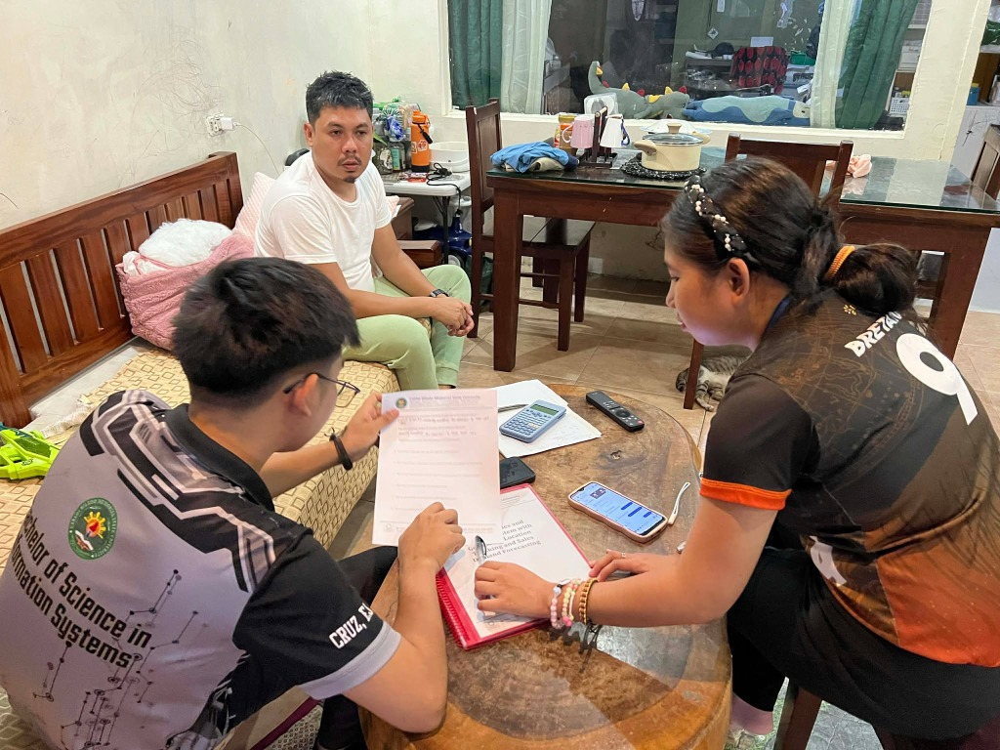
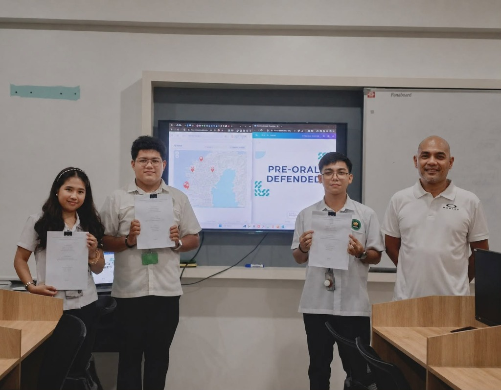

BCD Siomai — Sales & Inventory Management System with Geospatial Tracking
Lead developer for a comprehensive web-based inventory reconciliation and vendor cart location tracking platform developed for our beneficiary enterprise. Bridges daily mobile cart monitoring with commissary administrative controls.
▸
Geospatial Map Tracking: Real-time location visualization of mobile vendor carts using Leaflet.js and OpenStreetMap.
▸
Stock Reconciliation: Evening return inventory audits reconciling commissary distribution with cash collections.
▸
Automated Computations: Wholesale package discount calculations and predictive daily reorder logs.

Fieldwork
Pre-Oral Defense
Defended
React
Node.js
MySQL
Leaflet.js
REST API
Render Cloud